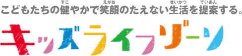

- 2015.6.20一般公開の様子ページがオープンしました。
- 2015.6.18商談見本市の様子ページがオープンしました。
- 2015.6.10ステージショーページを更新しました！
- 2015.5.29キッズパークページオープンしました！
- 2015.5.18来場者登録証ダウンロード・受注キャンペーンについて・出展社のイベントページオープンしました！
- 2015.4.27ステージショーページオープンしました！
- 2015.4.10英語版ページオープン・ホールマップ更新しました
- 2015.3.27東京おもちゃショー2015公式ホームページ、グランドオープンしました！

「キッズライフゾーン」とは･･･
「おもちゃ」だけでなく「こどもたちをとりまく衣食住」
すべてにスポットをあてて展開するゾーンです。
未来を担うこどもたちの飛躍を願い､様々な分野で
活躍する企業が集合しました。
- K-10
- （株）エー・ティー・エックス
- テレビ東京ネット局・AT-Xほかにて好評放送中のTVアニメ「ダイヤのA」原画展。
- K-18
- おもちゃのまちバンダイミュージアム
- 日本のおもちゃとめずらしい西欧のアンティークトイをご紹介。
- K-22
- カルピス
- カルピス体験コーナー！カルピスの原液を使って、自分で作る楽しさ・美味しさが体験できる無料試飲会を実施します！
- K-17
- （株）キッズステーション
- 子ども向け新キャラクター「ブーブーボーイ」と衛星放送局キッズステーションをご紹介します！
- K-23
- （株）サンリオ
- サンリオキャラクター「Shinkaizoku」の商品展示やフォトスポットを実施。
- K-12
- 清水建設（株）
- 木と触れ合えるワークショップ「木の表札を作ろう！」や、「たくさんつれるかな？木のさかなつりゲーム」、「かんながけ体験」などが楽しめます！
- K-08
- 小学館 ぷっちぐみ編集部
- 幼稚園～小学生の女の子のための雑誌『ぷっちぐみ』が初出展！モデルなりきりランウェイ＆フォトスポットや、手作り小物体験教室、クイズ大会など実施します！
- K-09
- 松竹（株）
- 歌舞伎衣裳や小道具を通じて、ご家族で日本の伝統文化「歌舞伎」を体験できます。
- K-05
- （一社）全国木材組合連合会
- 木のおもちゃ、つみき、木のプールなど「木とのふれあい」や、木片を組み合わせた楽器作りなどを通じて、温かみのある木の感触を実感できる「木の遊び舎（きのあそびや）」を展開します！
- K-21
- 仙台大学
- 冬季オリンピック競技「君もスケルトンに挑戦しよう！！」
- K-04
- （株）ソニー・クリエイティブ プロダクツ
- 今年で原作出版から70周年を迎える「きかんしゃトーマス」の巨大なふわふわが登場！
- K-19
- 台東区 墨田区 江東区
- 東京スカイツリー（R)の周辺の下町エリア「EAST TOKYO」の観光スポット情報や年中行事をご紹介します。ご当地キャラ「コトミちゃん」、「台東くん」も出演！！
- K-07
- （株）チェリオジャパン
- ライフガードの無料配布や、コンセプトカーの展示、チェリオ公式キャラクター「ウサダー」も登場？！一般公開日にはゲームやグッズもご用意しております。
- K-11
- 東京いちばプロジェクト
- 食生活を支える市場の機能と役割、築地市場の移転をご紹介します。パブリックデーには、市場の妖精「イッチーノ」が初登場！
- K-06
- トヨタ自動車（株）
- 親子で楽しめる小型コンセプトカーの展示などを行います。
- K-20
- 那須ハイランドパーク
- 栃木県那須高原にある遊園地「那須ハイランドパーク」はこの夏新登場の「じゃぶじゃぶガーデンちゃぷーん」や、イベントの紹介と、マルパカちゃんくじコーナーなどを実施
- K-15
- 日産自動車（株）
- クルマと玩具を交えた、TOMICAやウルトラマンとのコラボレーション企画展示。ブースで記念撮影をして、来場記念品をGETしよう！
- K-13
- （公財）日本宇宙少年団
- 「宇宙」のホンモノを題材としたさまざまな事業を展開する「宇宙少年団」の活動紹介の他、宇宙飛行士の訓練服（レプリカ）試着や、関連グッズの販売を行います！
- K-02
- NPO法人 日本ジュニアゴルファー育成協議会
- こどもからお年寄りまで、安全に楽しく屋外でも屋内でもプレイできる「スナッグゴルフ」の体験を通じて、ゴルフプレイの楽しさをPRします！
- K-01
- （公財）日本相撲協会
- ホンモノの力士が登場！相撲教習所の担当親方と力士たちによる相撲教室や、協会公認キャラクター「ひよの山」「赤鷲」のグリーティングも。日本の国技である大相撲をこどもたちに紹介します！
- K-03
- ファミリーアップス
- 親子で楽しむ”月刊”知育アプリ「ファミリーアップス」でおしごと体験！お子さまが将来の夢を発見するきっかけを提供します。協賛企業による試食やワークショップなど、イベントも盛りだくさん！
- K-16
- （株）保険見直し本舗
- 簡単なアンケートでおもちゃ釣りにチャレンジ!!無料保険相談予約も受け付け中！
- K-14
- （一社）盲導犬総合支援センター
- 盲導犬PR犬とのふれあい、チャリティーグッズの販売を通して、盲導犬育成事業への理解を深めます。